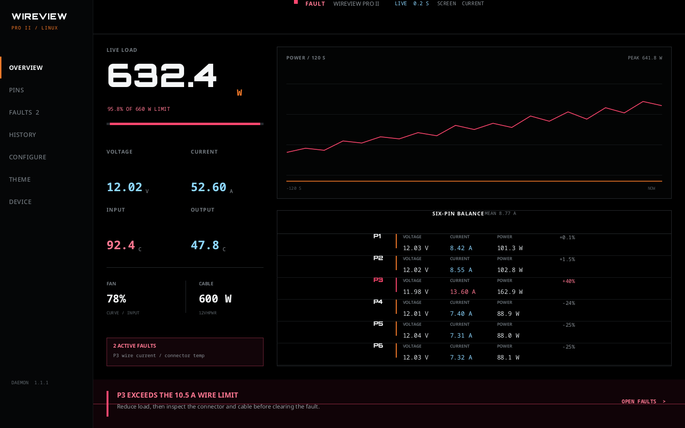
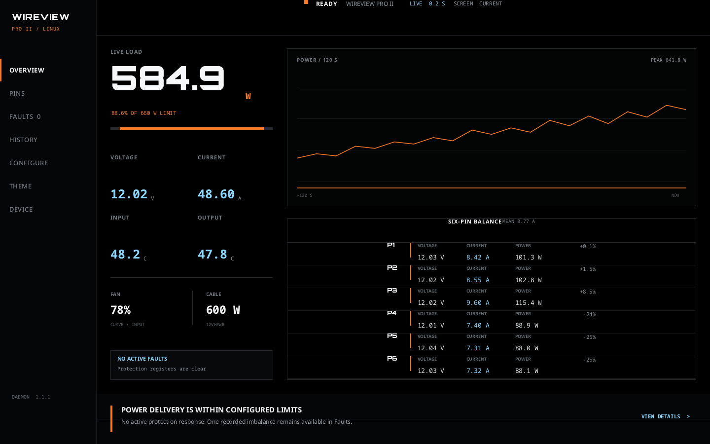
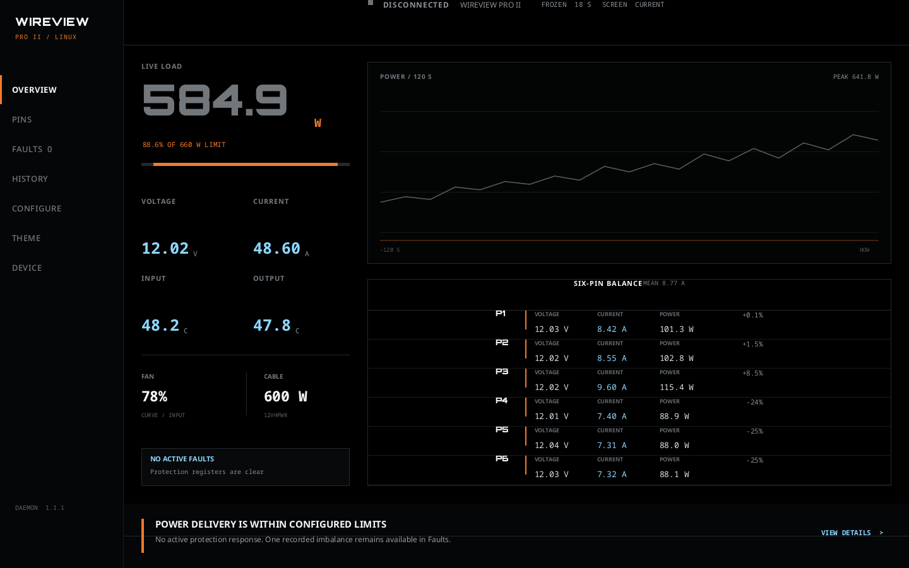
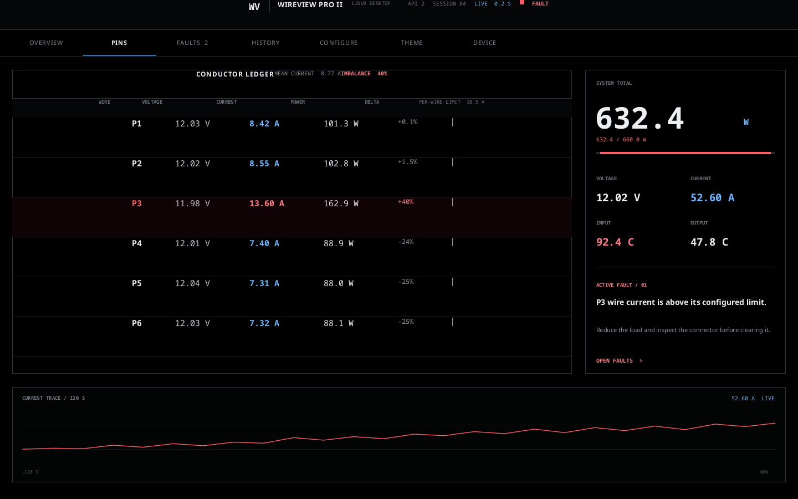
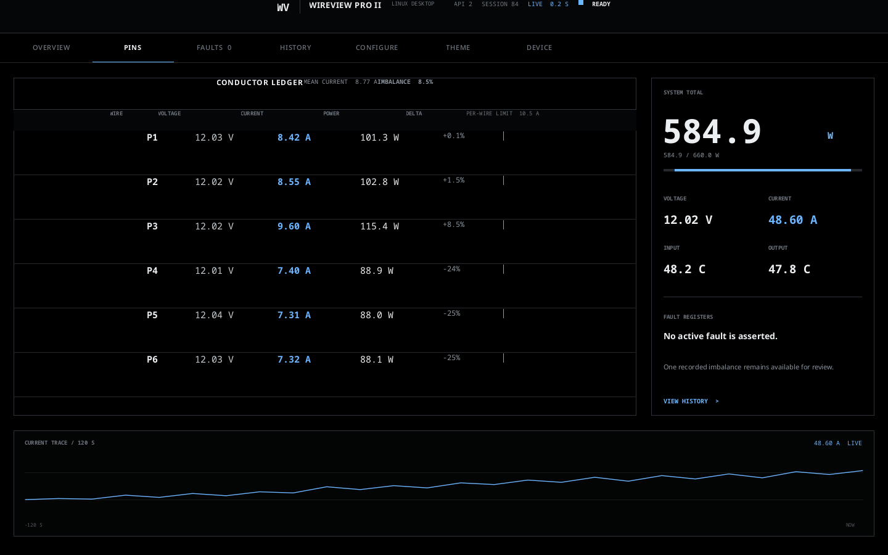
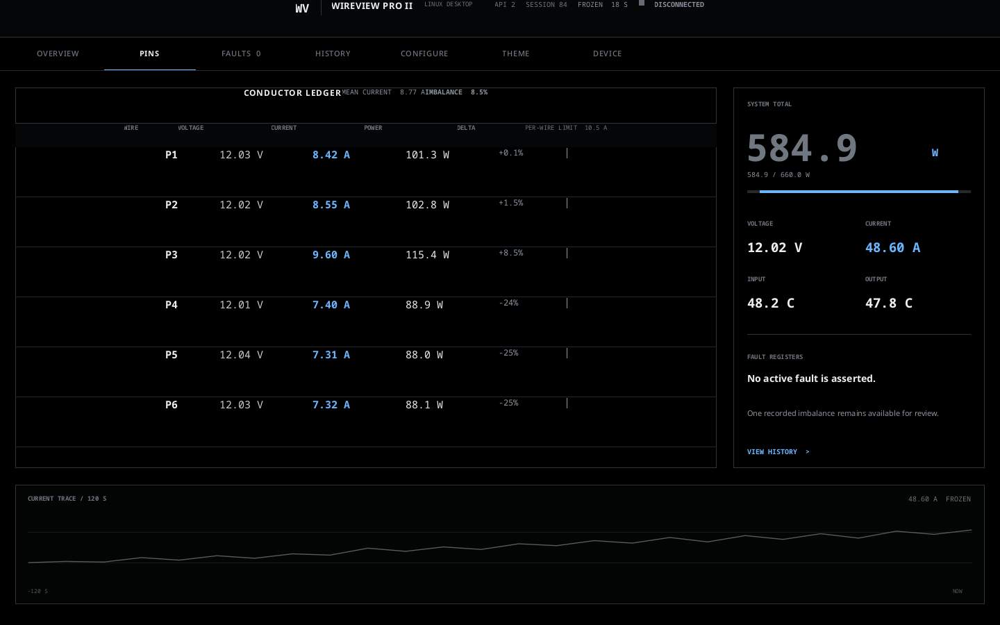
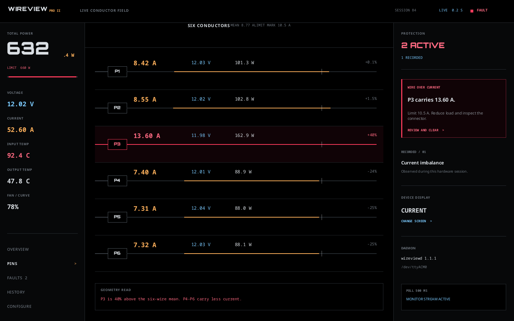
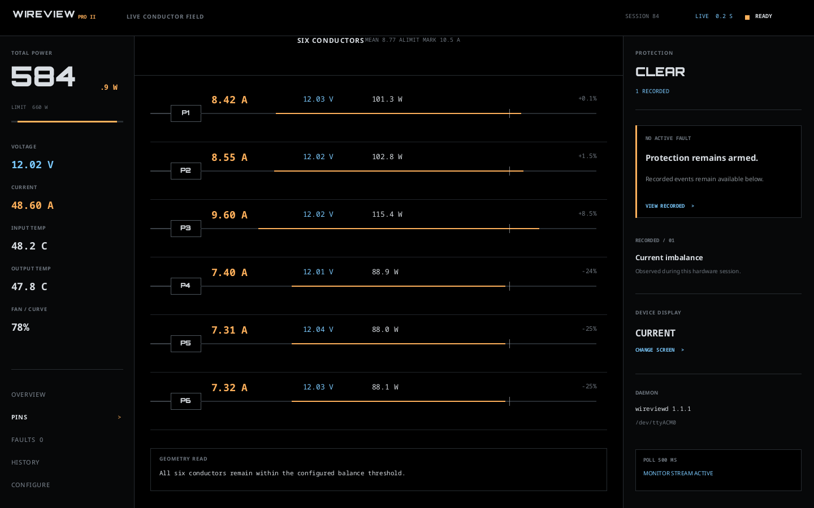
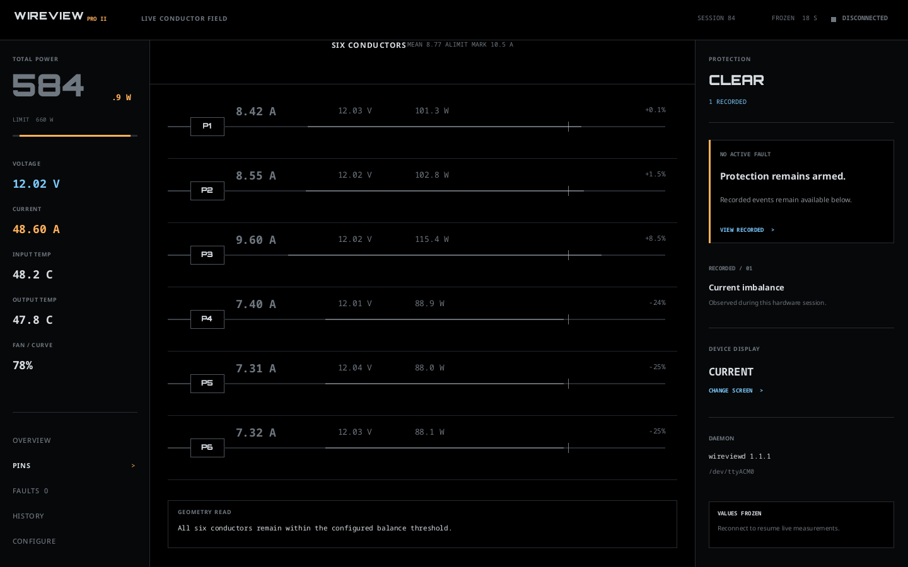

A. Copper bus
Overview-first, brand warmth, one continuous power trace.

Ready and stale states


B. Bench console
Keyboard-first measurement ledger with a strict lab-instrument rhythm.

Ready and stale states


C. Conductor field
Six cable conductors become the primary visual and diagnostic structure.

Ready and stale states

